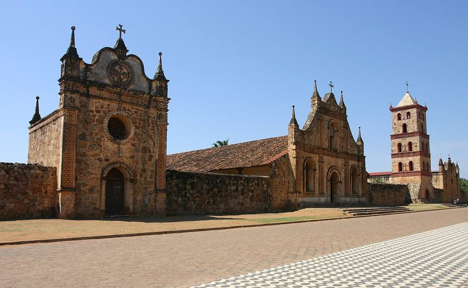
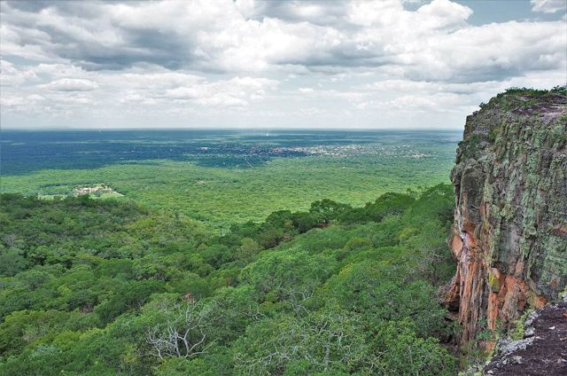
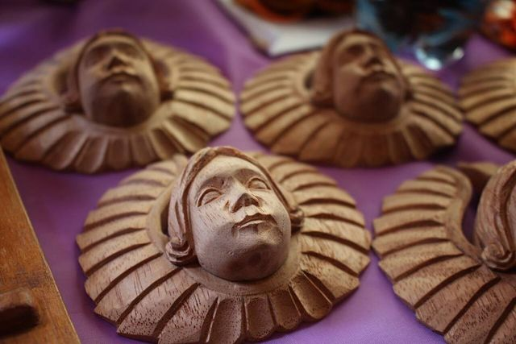
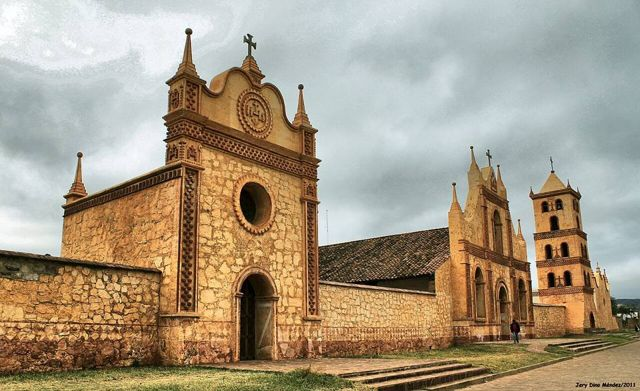
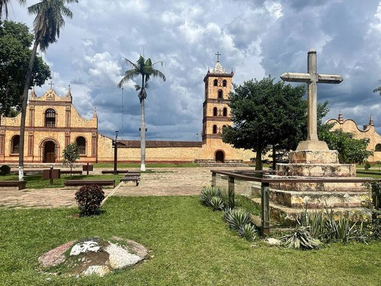
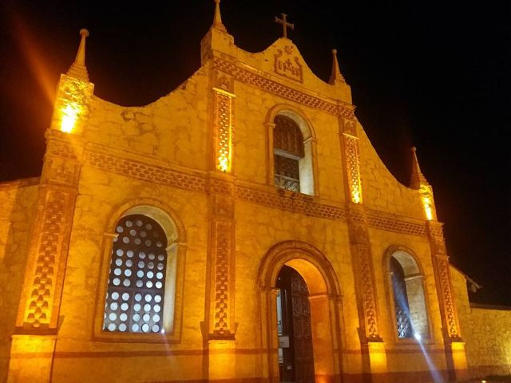
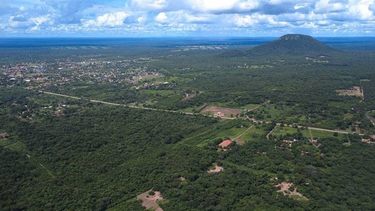

Missions : San José de Chiquitos
Département de Santa Cruz · Culture et histoire

San José de Chiquitos possède la seule mission construite en pierre, un ensemble impressionnant face à une grande place. Tout autour, la serranía offre de belles balades. C'est aussi la porte d'entrée vers Chochís, Roboré et Aguas Calientes.
300 maltitude
1 joursur place
À faire
- Ensemble missionnaire en pierre
- Parque Santa Cruz la Vieja
À goûter
- Locro de gallinaSoupe de riz épaisse au poulet fermier, réconfortante, typique de l'Orient.
- MajaditoRiz cuisiné avec du charque ou du poulet, servi avec un œuf au plat et de la banane frite. Le plat de Santa Cruz et du Beni.
- Cuñapé et pan de arrozPetits pains au fromage et au manioc, ou au riz, servis chauds avec un café le matin.
Conseil. Sur la route et la voie ferrée Santa Cruz – Brésil : retour facile.
À découvrir ici
Comment aller à San José
Chochís Route (bus, voiture) · 1 h 30
Bus vers Roboré ou Puerto Quijarro (descendre au croisement), ou taxi.
Roboré Route (bus, voiture) · 2 h 30
Bus Santa Cruz – Roboré / Puerto Quijarro qui passent par San José.
Roboré Train · 3 h 30
Train de la Ferroviaria Oriental (ligne Santa Cruz – Puerto Quijarro).
Santa Cruz Route (bus, voiture) · 4 h 30
Bus fréquents.
San Miguel Route (bus, voiture) · 4 à 6 h
Bus peu fréquents, ou voiture.
Santa Cruz Train · 6 h
Train de la Ferroviaria Oriental (ligne Santa Cruz – Puerto Quijarro).
Photos de Missions : San José de Chiquitos












Autres lieux de la région
 Missions : San JavierPremière des missions jésuites de Chiquitos (UNESCO), églises en bois peint.
Missions : San JavierPremière des missions jésuites de Chiquitos (UNESCO), églises en bois peint. Missions : ConcepciónLa plus belle place des missions, atelier de restauration et musée.
Missions : ConcepciónLa plus belle place des missions, atelier de restauration et musée. Missions : San Ignacio de VelascoLe carrefour du circuit des missions, avec sa lagune.
Missions : San Ignacio de VelascoLe carrefour du circuit des missions, avec sa lagune. Missions : San Miguel de VelascoMission chiquitana aux ateliers de sculpture sur bois, toujours très vivants.
Missions : San Miguel de VelascoMission chiquitana aux ateliers de sculpture sur bois, toujours très vivants. Missions : Santa Ana de VelascoLa plus authentique des missions de Chiquitos, avec son orgue d'origine.
Missions : Santa Ana de VelascoLa plus authentique des missions de Chiquitos, avec son orgue d'origine. Missions : San Rafael de VelascoÉglise de mission aux décors de mica et de bois peint, entre San Ignacio et San José.
Missions : San Rafael de VelascoÉglise de mission aux décors de mica et de bois peint, entre San Ignacio et San José. Parc national Noel Kempff MercadoParc UNESCO immense et très isolé : plateau de Huanchaca, chutes Arco Iris.
Parc national Noel Kempff MercadoParc UNESCO immense et très isolé : plateau de Huanchaca, chutes Arco Iris.